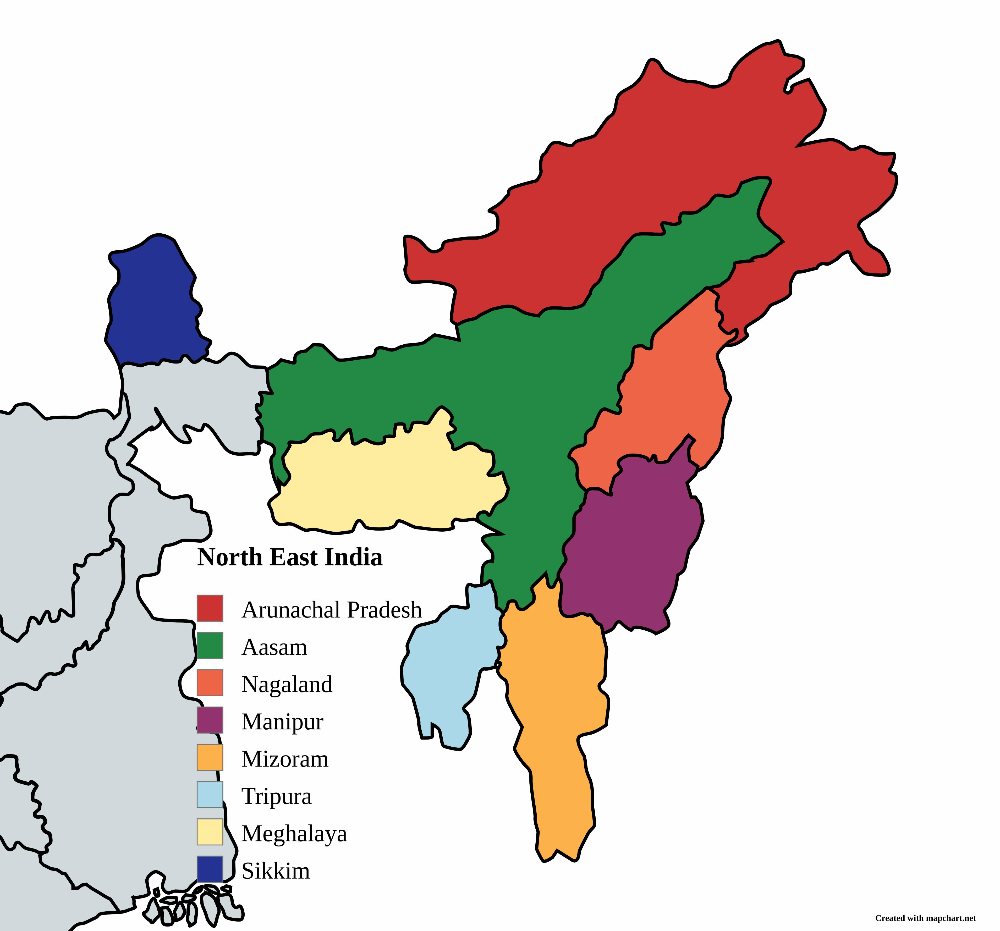

Flora and Fauna

Manipur
Flora:
- Uningthou (Toona ciliata): The state tree of Manipur.
- Siroi Lily (Lilium mackliniae): The state flower of Manipur.
- Orchids (Various species): Manipur has over 3,000 plant species, including many orchids.
- Bamboos and Ferns (Various species): Found in abundance across the state.
Fauna:
- Sangai (Brow-antlered deer) (Rucervus eldii eldii): The state animal of Manipur, also known as the "Dancing Deer," endemic to the state.
- Mrs. Hume's Pheasant (Nongin) (Syrmaticus humiae): The state bird of Manipur.
- Hoolock Gibbon (Hoolock hoolock): A rare primate species.
- Clouded Leopard (Neofelis nebulosa): Found in Manipur's forests.
- Slow Loris (Nycticebus bengalensis): A unique nocturnal primate species.
- Spotted Linshang (Ithaginis cruentus): A striking bird species.
- Bar-backed Pheasant (Lophura ignita): Found in Manipur's biodiversity.
- Burmese Peafowl (Pavo muticus): Also inhabits parts of Manipur.
- Blyth’s Tragopan (Tragopan blythii): A colorful and rare pheasant species.
- Four Varieties of Hornbills (Buceros spp. and Rhyticeros spp.): Several hornbill species are found in the region.
Mizoram
Amphibians:
- Meghalaya Rock Toad (Bufoides meghalayanus): Originally thought to be exclusive to Meghalaya, also reported in Mizoram.
Birds:
- Blyth’s Tragopan (Tragopan blythii): A rare and colorful pheasant.
- Dark-rumped Swift (Apus acuticauda): A unique species of swift.
- Grey Sibia (Heterophasia gracilis): A bird species found in Mizoram.
- Striped Laughing Thrush (Garrulax virgatus): Found in the region's forests.
- Brown-capped Laughing Thrush (Garrulax austeni): Another unique species found in Mizoram.